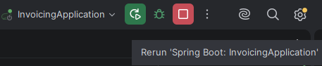
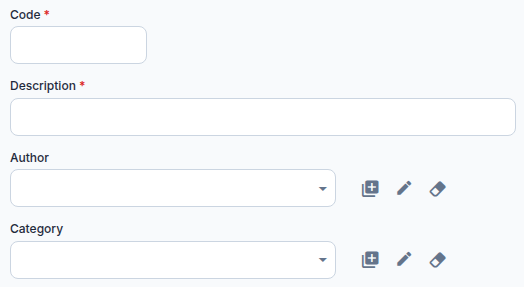

Curso: 1. Primeros pasos | 2. Modelo básico del dominio (1) | 3. Modelo básico del dominio (2) | 4. Refinar la interfaz de usuario | 5. Desarrollo ágil | 6. Herencia de superclases mapeadas | 7. Herencia de entidades | 8. Herencia de vistas | 9. Propiedades Java | 10. Propiedades calculadas | 11. @DefaultValueCalculator en colecciones | 12. @Calculation y totales de colección | 13. @DefaultValueCalculator desde archivo | 14. Evolución del esquema manual | 15. Cálculo de valor por defecto multiusuario | 16. Sincronizar propiedades persistentes y calculadas | 17. Lógica desde la base de datos | 18. Validando con @EntityValidator | 19. Alternativas de validación | 20. Validación al borrar | 21. Anotación Bean Validation propia | 22. Llamada REST desde una validación | 23. Atributos en anotaciones | 24. Refinar el comportamiento predefinido | 25. Comportamiento y lógica de negocio | 26. Referencias y colecciones | A. Arquitectura y filosofía | B. Java Persistence API | C. Anotaciones | D. Pruebas automáticas
Hoy en día el desarrollo ágil ya no es “una técnica nueva y rompedora”, sino una forma establecida de hacer desarrollo de software, es más, es la forma ideal de desarrollar software para muchos.
Si no estás familiarizado con el desarrollo ágil puedes echar un vistazo a agilemanifesto.org. Básicamente, el desarrollo ágil favorece el uso de retroalimentación obtenida de un producto funcional sobre un diseño previo meticuloso. Esto da más protagonismo a los programadores y usuarios, y minimiza la importancia de los analistas y los arquitectos de software.
Este tipo de desarrollo necesita también un nuevo tipo de herramientas, porque necesitas una aplicación funcional rápidamente. Tiene que ser tan rápido desarrollar la aplicación inicial como lo sería escribir la descripción funcional. Además, necesitas responder a las peticiones y opiniones del usuario rápidamente. El usuario necesita ver sus propuestas funcionando en poco tiempo.
OpenXava es ideal para el desarrollo ágil no solo porque permite un desarrollo inicial muy rápido, sino porque también te permite hacer cambios y ver su efecto instantáneamente. Veamos un pequeño ejemplo de esto.
Por ejemplo, una vez que el usuario ve tu aplicación y empieza a jugar con ella, se da cuenta de que trabaja con libros, música, programas y así por el estilo. Todos estos productos tienen autor, y sería útil almacenar el autor, así como ver los productos por autor.
Añadir esta nueva funcionalidad a tu aplicación es simple y rápido. Lo primero es crear una nueva clase para Author (autor) con el siguiente código:
package com.yourcompany.invoicing.model;
import jakarta.persistence.*;
import org.openxava.annotations.*;
import lombok.*;
@Entity @Getter @Setter
public class Author {
@Id @GeneratedValue(strategy=GenerationType.UUID) @Hidden
@Column(length=36)
String oid;
@Column(length=50) @Required
String name;
}
Crea una entidad Author con un oid y nameAhora, añade este código a la ya existente entidad Product:
@ManyToOne(fetch=FetchType.LAZY)
@DescriptionsList
Author author;
Añade una referencia a Author en Product que se visualice con una lista desplegableAsí, tu entidad Product tiene una referencia a Author.
Realmente has escrito una cantidad pequeña de código. Para ver el efecto, solo necesitas reiniciar tu aplicación pulsando el botón Rerun:

Después ve al navegador y recarga la página con el módulo Product, y ahí verás un combo para escoger el autor del producto, como se muestra aquí:

¿Qué ocurre si el usuario quiere escoger un autor y ver todos sus productos? Está chupado. Solo has de hacer la relación entre Product y Author bidireccional. Ve a la clase Author y añade el siguiente código:
@OneToMany(mappedBy="author")
@ListProperties("number, description, price")
Collection<Product> products;
Collection está en el paquete java.util, así que has de añadir el siguiente import al principio de Author (o simplemente pulsar Alt+Enter sobre el nombre de la clase en IntelliJ):
import java.util.*;Ahora reinicia tu aplicación y refresca tu navegador con el módulo Author. Escoge un autor y verás sus productos. Deberías ver algo parecido a esto:

Sí, añades una nueva colección, rearrancas tu aplicación, refrescas tu navegador y tienes una interfaz de usuario completa para manejarla. En este caso el usuario puede pulsar en el botón Add para escoger un libro de una lista de libros existentes o pulsar New para introducir los datos para crear un nuevo libro que se añadirá a la colección. Además, el autor no se puede borrar mientras tenga libros asociados a él. Puedes definir un comportamiento diferente poniendo cascade a REMOVE o ALL, así:
@OneToMany(mappedBy="author", cascade=CascadeType.REMOVE) // NO LO AÑADAS A TU CÓDIGO
De esta forma solo el botón New para crear nuevos libros está disponible, el botón Add no está presente. Además, cuando el autor se borre, sus libros se borrarán también. Para el caso autor/libros no queremos este comportamiento, pero puede ser útil en muchos casos donde una @ElementCollection sea insuficiente.
Esta lección ha mostrado el código completo y los pasos para hacer cambios y ver el resultado de una manera muy interactiva. Tus ojos han visto cómo OpenXava es una herramienta ágil, ideal para hacer desarrollo ágil.
Efectivamente, tienes una aplicación funcional con poco esfuerzo. Aunque esta aplicación “tal cual” puede servir como utilidad de mantenimiento o un prototipo, todavía necesitas añadir validaciones, lógica de negocio, comportamiento de la interfaz de usuario, seguridad y así por el estilo para convertir estas entidades que has escrito en una aplicación de gestión lista para tus usuarios.
Aprenderás estos temas avanzados en las siguientes lecciones.
¿Problemas con la lección? Pregunta en el foro ¿Ha ido bien? Ve a la lección 6